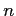

Next:
Copying
Up:
GNU Archimedes, the Free
Previous:
GNU Archimedes, the Free
Contents
Copying
GNU Free Documentation License
Why GNU Archimedes? A brief history...
The Scientifical and Industrial Motivations
The Ethical Motivations
A Short Remark on Acknowledgments
Do you want to support GNU Archimedes?
Introduction
Overview
A First Example: The
- -
Diode
Physical Models employed in GNU Archimedes
The Semiclassical Approach
The Quantum Effects
The Particle Dynamics
The Band Structure
The Drift Process
Initial Conditions
Contacts and Boundaries
Insulator Boundaries
Ohmic Contacts
Schottky Contacts
The Scattering Process
The Choice of the Scattering
The Simplified MEP Model
Coupling Simplified MEP model and Monte Carlo method
Coupling between Monte Carlo and Poisson
Introduction
The Cloud-in-a-Cell algorithm
The Stationary Poisson Equation
The Non-Stationary Poisson Equation
Numerical Resolution of the NSP Equation
Electric Field Calculation
GNU Archimedes Commands Syntax
ACCEPTORDENSITY
CIMP
COMMENTS
CONTACT
DONORDENSITY
LEID
MATERIAL
TRANSPORT
MOSFET
FINALTIME
TAUW
TIMESTEP
XLENGTH
YLENGTH
XSPATIALSTEP
YSPATIALSTEP
QUANTUMEFFECTS
NOQUANTUMEFFECTS
MAXIMINI
NOMAXIMINI
SAVEEACHSTEP
LATTICETEMPERATURE
STATISTICALWEIGHT
MEDIA
OUTPUTFORMAT
Example: The MESFET device.
The Monte Carlo MESFET simulation
The Fast Monte Carlo MESFET simulation
Acknowledgments
Didier Link 2007-05-18